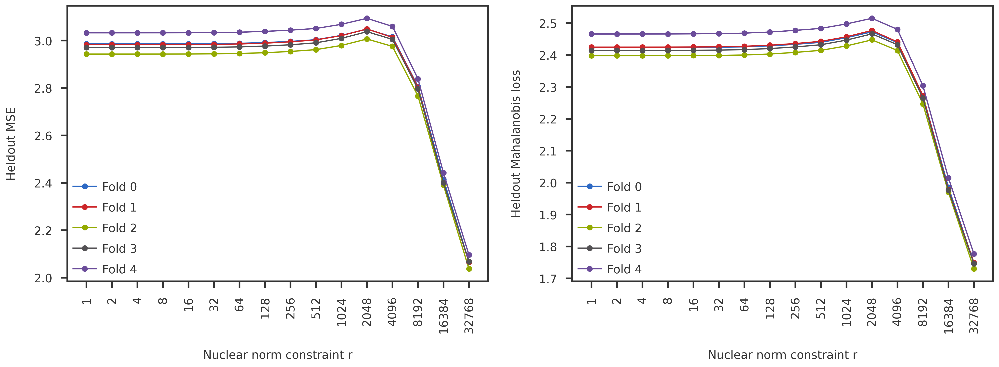

This notebook shows the results of matrix completion CV on PGC using NNM-Corr model and PGD-AFW solver.
Background
Matrix completion cross-validation (CVMC) on the PGC data using NNM model showed a monotonically decreasing prediction error on the heldout matrix elements with increasing nuclear norm constraint. We assumed that this is because the 107 PGC psychiatric traits are strongly correlated with one another: virtually every masked entry is predictable from neighboring traits regardless of the nuclear norm constraint, so prediction error keeps falling as we increase r. With the split replication cross-validation (CVSR), we observed that the NNM-Corr model shows a wide range of nuclear norm constraints, at which relative spectral gap remains substantially high for many k values. However, the projection distance between subspaces were noisy.
The distinct difference in the spectral behavior of NNM and NNM-Corr models made me rethink the failure mode in CVMC. Is it because of the model misspecification rather than a genuine “no interior optimum” property of the data? The “noise” that the NNM model “thinks” it’s fitting at large r is actually correlated signal across traits (the off-diagonal of A). The correlated signal looks like additional low-rank structure, so larger r keeps capturing more of it without ever overfitting — bias decreases, the model’s notion of variance stays low, and held-out MSE keeps coming down. There’s no interior optimum because the model never reaches its misspecified noise floor.
Therefore, before giving up on the CVMC, I wanted to check the behavior with the NNM-Corr model. With the correct noise model, shrinkage could give a real bias-variance trade-off and the curve could bend back up at large r. Moreover, the heldout MSE is measured in the Frobenius metric, which is what the sampling covariance would be whitening against. Even if there were an interior optimum in the correct (Mahalanobis) loss, we wouldn’t see it in plain Frobenius MSE.
Configuration
Code
import reimport jsonimport picklefrom pathlib import Pathimport numpy as npimport pandas as pdimport matplotlib.pyplot as pltfrom pymir import mpl_stylesheetfrom pymir import mpl_utilsmpl_stylesheet.banskt_presentation(splinecolor ='black', dpi =300)from matplotlib import colormaps as mpl_cmapsimport matplotlib.colors as mpl_colorsfrom mpl_toolkits.axes_grid1 import make_axes_locatable
The CVMC pipeline, in its current implementation, does not report the Mahalanobis loss on the heldout entries. Hence, we have to calculate it post-hoc. Since this is time-consuming, we save the dataframe for future reproduction.
fig = plt.figure(figsize=(20,6))gs = fig.add_gridspec(nrows=1, ncols=2, wspace=0.2, hspace=0)ax1 = fig.add_subplot(gs[0, 0])ax2 = fig.add_subplot(gs[0, 1])rank_list = mse_df["nucnorm"].to_numpy()r, rticks, rlabels = get_r_scaled(rank_list, scale='log2')for fold_id inrange(5): df = long_df[long_df["fold_id"] == fold_id].sort_values(["nucnorm"]) y = df[metric_name].to_numpy() ax1.plot(r, y, 'o-', label=f"Fold {fold_id}") df = corr_mse_long_df[corr_mse_long_df["fold_id"] == fold_id].sort_values(["nucnorm"]) y = df["mahalanobis_mse"].to_numpy() ax2.plot(r, y, 'o-', label=f"Fold {fold_id}")ax1.set_ylabel("Heldout MSE")ax2.set_ylabel("Heldout Mahalanobis loss")for ax in [ax1, ax2]: ax.legend(handlelength=2) ax.set_xticks(rticks) ax.set_xticklabels([str(int(r)) for r in rlabels], rotation=90) ax.set_xlabel("Nuclear norm constraint r")plt.show()

Inter-fold dispersion
The heldout MSE and Mahalanobis loss are very similar, and neither show any crossover in the prediction error. One last thing to check would be the inter-fold dispersion: Is there any difference between the coefficient of variation (std / mean) between the different folds used in the CVMC?
The NNM-Corr CVMC results are also monotonic and does not show any regime change with varying nuclear norm constraint for the PGC data.
Additionally, I also checked the proportion of heldout entries per disease category. The categories were manually curated by Shane. I found no discernible anomaly in the proportion of heldout entries.